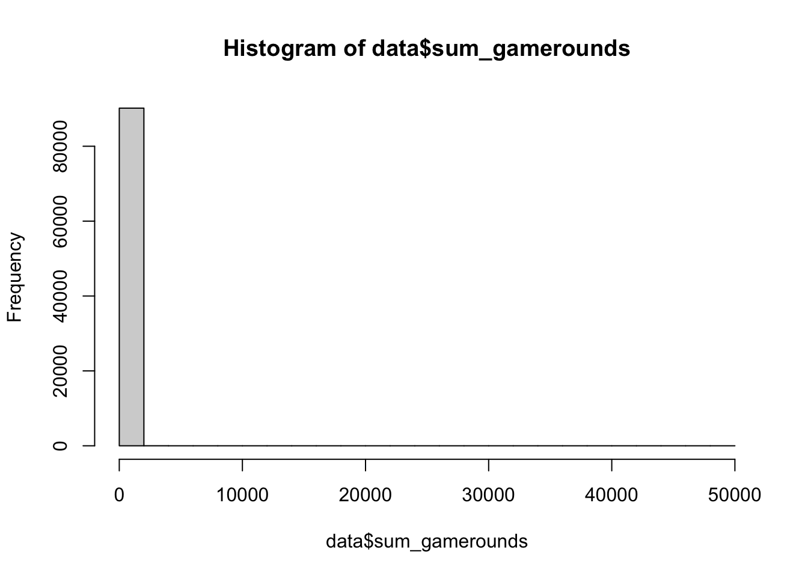
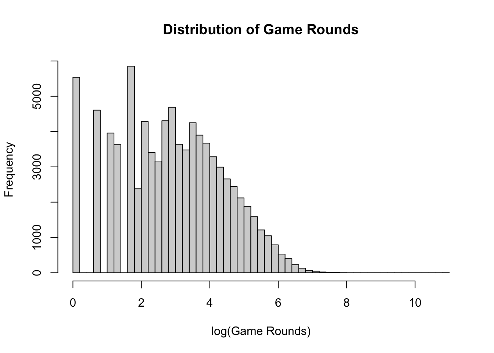

data = read.csv("cookie_cats.csv")Cookie Cats A/B Testing
1. Define the experiment and research question
Cookie Cats is a mobile puzzle game developed by Tactile Entertainment.
As players progress through the game, they encounter gates that require them to either wait before continuing or make an in-app purchase to continue immediately.
In this experiment, players were randomly assigned to one of two versions of the game:
The first gate placed at level 30
The first gate placed at level 40.
Formally, the research question is to determine whether moving the first gate from level 30 to 40 helps improve player engagement and retention.
Reading the data:
There are five variables:
userid - (int) a unique number that identifies each player.
version - (gate_30/ gate_40) the version of the game assigned to the player:
gate_30: the first gate is at level 30.
gate_40: the first gate is at level 40.
sum_gamerounds - (int) the number of game rounds played by the player during the first 14 days after install.
retention_1 - (True/False) did the player come back and play 1 day after installing?
retention_7 - (True/False) did the player come back and play 7 days after installing?
Since we want to know “whether moving the first gate from level 30 to 40 helps improve player engagement and retention”, we will be examining the effect of version (explanatory) on the retention and number of game rounds (response).
2. Identify the treatment and control groups
The players were randomly assigned to one of two versions of the game
Control group: gate_30
Treatment group: gate_40
gate_30 gate_40
44700 45489 Roughly the same amount of players were assigned to each group.
3. Define the relevant experiment metrics
The outcomes available in the dataset measure two aspects of player behavior:
1-day retention: whether a player returns 1 day after installing the game.
7-day retention: whether a player returns 7 days after installing the game.
Game rounds: the total number of rounds played during the first 14 days.
We will use these metrics to compare player behavior between the control and treatment groups.
4. Explore and check the experimental data
Before estimating the treatment effect, examine the quality and the structure of the data.
Dimension of the data
dim(data)[1] 90189 5The data contains 90189 rows with 5 variables.
Missing values
colSums(is.na(data)) userid version sum_gamerounds retention_1 retention_7
0 0 0 0 0 None of the values are missing.
Duplicate players
sum(duplicated(data$userid))[1] 0No duplicated players
Variables
Retention
table(data$retention_1)False True 50036 40153table(data$retention_7)False True 73408 16781Roughly about half of the users returned on day 1, but most most users did not return on day 7.
78.6% of users who returned on day 7 also returned on day 1.
sum( data$retention_1 == "True" & data$retention_7 == "True" )/sum( data$retention_7 == "True" )[1] 0.7855313Game Rounds
summary(data$sum_gamerounds)Min. 1st Qu. Median Mean 3rd Qu. Max. 0.00 5.00 16.00 51.87 51.00 49854.00hist(data$sum_gamerounds)
There seem to be some substantial skewness in the game rounds. The mean is much higher at 52 compared to the median at 16, implying an extreme right-skewness: while the middle 50% of the users played between 5~50 rounds, a small number of players logged 2,000~50,000 rounds.
head(data[order(data$sum_gamerounds, decreasing = TRUE), ], 5)userid version sum_gamerounds retention_1 retention_7 57703 6390605 gate_30 49854 False True 7913 871500 gate_30 2961 True True 29418 3271615 gate_40 2640 True False 43672 4832608 gate_30 2438 True True 48189 5346171 gate_40 2294 True TrueBecause this extreme value makes the raw distribution difficult to visualize, we can examine the distribution on a log scale:
hist(log(data$sum_gamerounds), breaks = 50, main = "Distribution of Game Rounds", xlab = "log(Game Rounds)" )
Instead of removing the extreme observations, we will later examine whether they substantially influence the estimated treatment effect.
5. Estimate and test the treatment effect
Because players were randomly assigned to gate 30 or gate 40, we can estimate the treatment effect by directly comparing outcomes between the two groups. Throughout the analysis:
A = gate 30 (control)
B = gate 40 (treatment)
For each outcome, the treatment effect is defined as:
\(\Delta = \text{Outcome}_B - \text{Outcome}_A\)
A positive value of \(\Delta\) favors gate 40, while a negative value favors gate 30.
First, convert the retention variables to 0/1 indicators:
data$retention_1_num <- as.integer(
tolower(as.character(data$retention_1)) == "true"
)
data$retention_7_num <- as.integer(
tolower(as.character(data$retention_7)) == "true"
)
n_A <- sum(data$version == "gate_30")
n_B <- sum(data$version == "gate_40")5.1 1-day Retention
For 1-day retention, let \(p_A\) be the probability that a player assigned to gate 30 returns after one day, and let \(p_B\) be the corresponding probability for gate 40.
The treatment effect is \[\Delta_1 = p_B - p_A\]
We estimate these probabilities using the observed proportions in each group.
p_A_1 <- mean( data$retention_1_num[data$version == "gate_30"] )
p_B_1 <- mean( data$retention_1_num[data$version == "gate_40"] )
delta_1 <- p_B_1 - p_A_1
c( control_rate = p_A_1, treatment_rate = p_B_1, treatment_effect = delta_1 ) control_rate treatment_rate treatment_effect
0.44818792 0.44228275 -0.00590517 The hypotheses are:
\[H_0: p_B - p_A = 0 \\ H_A: p_B - p_A \neq 0\]
The standard error of the estimated difference in proportions is:
se_1 <- sqrt( p_A_1 * (1 - p_A_1) / n_A + p_B_1 * (1 - p_B_1) / n_B )
se_1[1] 0.003309892An approximate 95% confidence interval for the treatment effect is:
ci_1 <- delta_1 + c(-1, 1) * qnorm(0.975) * se_1
ci_1[1] -0.0123924394 0.0005820999Finally, conduct a two-sample proportion test.
test_1 <- prop.test(x = c( sum(data$retention_1_num[data$version == "gate_40"]),
sum(data$retention_1_num[data$version == "gate_30"]) ),
n = c(n_B, n_A), correct = FALSE )
test_1
2-sample test for equality of proportions without continuity correction
data: c(sum(data$retention_1_num[data$version == "gate_40"]), sum(data$retention_1_num[data$version == "gate_30"])) out of c(n_B, n_A)
X-squared = 3.183, df = 1, p-value = 0.07441
alternative hypothesis: two.sided
95 percent confidence interval:
-0.0123924394 0.0005820999
sample estimates:
prop 1 prop 2
0.4422827 0.4481879 Here, gate 40 is entered first and gate 30 second so that the estimated difference corresponds to treatment minus control.
5.2 7-day Retention
For 7-day retention, let
\(p_A = P(\text{retained at day 7} \mid \text{gate 30})\) and \(p_B = P(\text{retained at day 7} \mid \text{gate 40})\),
where gate 30 is the control group and gate 40 is the treatment group.
The treatment effect of interest is the difference in 7-day retention probabilities: \(\Delta = p_B - p_A\)
Therefore:
\(\Delta >0\): moving the gate to level 40 increases 7-day retention.
\(\Delta < 0\): moving the gate to level 40 decreases 7-day retention.
\(\Delta = 0\): moving the gate has no effect on 7-day retention.
Because the true population probabilities \(p_A\) and \(p_B\)are unknown, we will estimate them using the observed retention proportions in the two groups.
p_A_7 <- mean(
data$retention_7_num[data$version == "gate_30"]
)
p_B_7 <- mean(
data$retention_7_num[data$version == "gate_40"]
)
delta_7 <- p_B_7 - p_A_7
c(
control_rate = p_A_7,
treatment_rate = p_B_7,
treatment_effect = delta_7
) control_rate treatment_rate treatment_effect
0.190201342 0.182000044 -0.008201298 The hypotheses are (same as day-1 retention):
\[H_0: p_B - p_A = 0 \\ H_A: p_B - p_A \neq 0\]
Calculate the standard error:
se_7 <- sqrt(
p_A_7 * (1 - p_A_7) / n_A +
p_B_7 * (1 - p_B_7) / n_B
)
se_7[1] 0.002592014Construct an approximate 95% confidence interval:
ci_7 <- delta_7 +
c(-1, 1) * qnorm(0.975) * se_7
ci_7[1] -0.013281552 -0.003121044Then perform the two-sample proportion test:
test_7 <- prop.test(x = c( sum(data$retention_7_num[data$version == "gate_40"]),
sum(data$retention_7_num[data$version == "gate_30"]) ),
n = c(n_B, n_A), correct = FALSE )
test_7
2-sample test for equality of proportions without continuity correction
data: c(sum(data$retention_7_num[data$version == "gate_40"]), sum(data$retention_7_num[data$version == "gate_30"])) out of c(n_B, n_A)
X-squared = 10.013, df = 1, p-value = 0.001554
alternative hypothesis: two.sided
95 percent confidence interval:
-0.013281552 -0.003121044
sample estimates:
prop 1 prop 2
0.1820000 0.1902013 5.3 Number of game rounds
The number of game rounds is a quantitative outcome rather than a binary outcome.
Let \(\mu_A\) represent the mean number of game rounds for players assigned to gate 30 and \(\mu_B\) represent the mean for players assigned to gate 40.
The treatment effect is:
\[\Delta_{\text{rounds}} = \mu_B - \mu_A\]
Estimate the group means and treatment effect:
mean_A <- mean(
data$sum_gamerounds[data$version == "gate_30"]
)
mean_B <- mean(
data$sum_gamerounds[data$version == "gate_40"]
)
delta_rounds <- mean_B - mean_A
c(
control_mean = mean_A,
treatment_mean = mean_B,
treatment_effect = delta_rounds
) control_mean treatment_mean treatment_effect
52.456264 51.298776 -1.157488 The hypotheses are:
\[H_0: \mu_B - \mu_A = 0 \\ H_A: \mu_B - \mu_A \neq 0\]
Since the population variances are unknown and must be estimated from the sample, we can use a two sample t-test for unequal variance (aka. Welch two-sample t-test).
The main difference between Welch’s t-test and the equal-variance version of the two-sample t-test is the assumption about the two population variances:
The equal-variance t-test assumes that both groups have the same population variance.
Welch’s t-test estimates the variance separately for each group and does not assume that the variances are equal.
Both tests compare the difference between two sample means with the uncertainty in that difference. Welch’s test is generally the safer default because it remains appropriate when the groups have different variances or different sample sizes. It is not a z-test, because the population variances are unknown and must be estimated from the data.
In practice, this is done by calling a standard t.test in R with var.equal = FALSE:
rounds_test <- t.test(
data$sum_gamerounds[data$version == "gate_40"],
data$sum_gamerounds[data$version == "gate_30"],
alternative = "two.sided",
var.equal = FALSE
)
rounds_test
Welch Two Sample t-test
data: data$sum_gamerounds[data$version == "gate_40"] and data$sum_gamerounds[data$version == "gate_30"]
t = -0.88544, df = 58595, p-value = 0.3759
alternative hypothesis: true difference in means is not equal to 0
95 percent confidence interval:
-3.719705 1.404728
sample estimates:
mean of x mean of y
51.29878 52.45626 The confidence interval reported by t.test() corresponds to the difference, \(\mu_B - \mu_A\), where \(\mu_B\) is the mean number of game rounds for gate 40 and \(\mu_A\) is the mean number of game rounds for gate 30.
Because the distribution of game rounds is extremely right-skewed and contains an unusually large observation, the difference in means should be interpreted with some caution. The primary analysis will retain all observations, but we can also conduct a sensitivity analysis to determine how strongly the extreme observation affects the result.
6. Interpret the results
Now, summarizing the estimated treatment effects, confidence intervals, and p-values for the three outcomes:
| Metric | Control | Treatment | Effect | CI_lower | CI_upper | p_value |
|---|---|---|---|---|---|---|
| 1-day retention | 0.4482 | 0.4423 | -0.0059 | -0.0124 | 0.0006 | 0.0744 |
| 7-day retention | 0.1902 | 0.1820 | -0.0082 | -0.0133 | -0.0031 | 0.0016 |
| Game rounds | 52.4563 | 51.2988 | -1.1575 | -3.7197 | 1.4047 | 0.3759 |
6.1 1-day retention
The 1-day retention rate was approximately 44.82% for gate 30 and 44.23% for gate 40.
The estimated treatment effect was \(\hat{\Delta}_1 = -0.0059\), meaning there was a 0.59% decrease in 1-day retention.
The two-sample proportion test gave \(p = 0.074\) with 95% confidence interval, (-0.0124, 0.0006)
Because the confidence interval contains zero and the p-value is greater than 0.05, we do not have sufficient evidence to conclude that moving the gate affects 1-day retention.
However, the estimated effect is negative, meaning the observed data slightly favor keeping the gate at level 30.
6.2 7-day retention
The 7-day retention rate was approximately 19.02% for gate 30 and 18.20% for gate 40.
The estimated treatment effect was \(\hat{\Delta}_7 = -0.0082\) (a 0.82 percentage-point decrease) in 7-day retention.
The approximate 95% confidence interval was (-0.0133, -0.0031), and the two-sample proportion test gave p-value of 0.0016.
Because the confidence interval does not contain zero and the p-value is less than 0.05, there is statistical evidence that moving the gate from level 30 to level 40 decreases 7-day retention.
Although the absolute decrease is 0.82 percentage points, relative to the gate-30 retention rate this represents approximately a 4.3% decrease in 7-day retention.
6.3 Number of game rounds
Players assigned to gate 30 played an average of approximately 52.46 rounds, while players assigned to gate 40 played an average of approximately 51.30 rounds.
The estimated treatment effect was \(\hat{\Delta}_{rounds} = -1.16\), meaning players assigned to gate 40 played approximately 1.16 fewer rounds on average.
The 95% confidence interval was approximately (-3.72, 1.40) with p-value: 0.376.
Because the confidence interval contains zero and the p-value is greater than 0.05, there is not sufficient evidence that moving the gate affects the mean number of game rounds played.
The game-round distribution is also highly right-skewed and contains an extreme observation, so conclusions based on the mean should be interpreted cautiously.
Overall
The three outcomes do not provide evidence that moving the first gate from level 30 to level 40 improves player behavior.
There is no statistically significant difference in 1-day retention.
There is evidence of a decrease in 7-day retention when the gate is moved to level 40.
There is no statistically significant difference in the mean number of game rounds played.
The clearest treatment effect is therefore seen in 7-day retention, where players exposed to the gate at level 40 were less likely to return after seven days.
7. Make a practical recommendation
Based on the results of this experiment, I would recommend keeping the first gate at level 30 rather than moving it to level 40.
Moving the gate to level 40 did not produce a statistically detectable improvement in either 1-day retention or the number of game rounds played. More importantly, 7-day retention decreased by approximately 0.82 percentage points, corresponding to about a 4.3% relative decrease compared with the gate-30 group.
Therefore, the experiment provides no evidence of a benefit from moving the gate and provides evidence of a negative effect on longer-term retention.
One limitation is that a minimum practically important effect was not specified before the analysis. Therefore, while the decrease in 7-day retention is statistically significant, determining its exact business importance would require additional information about the value of player retention, revenue, and the costs or benefits associated with changing the gate location.
Given the available outcomes, however, gate 30 is the preferred version.